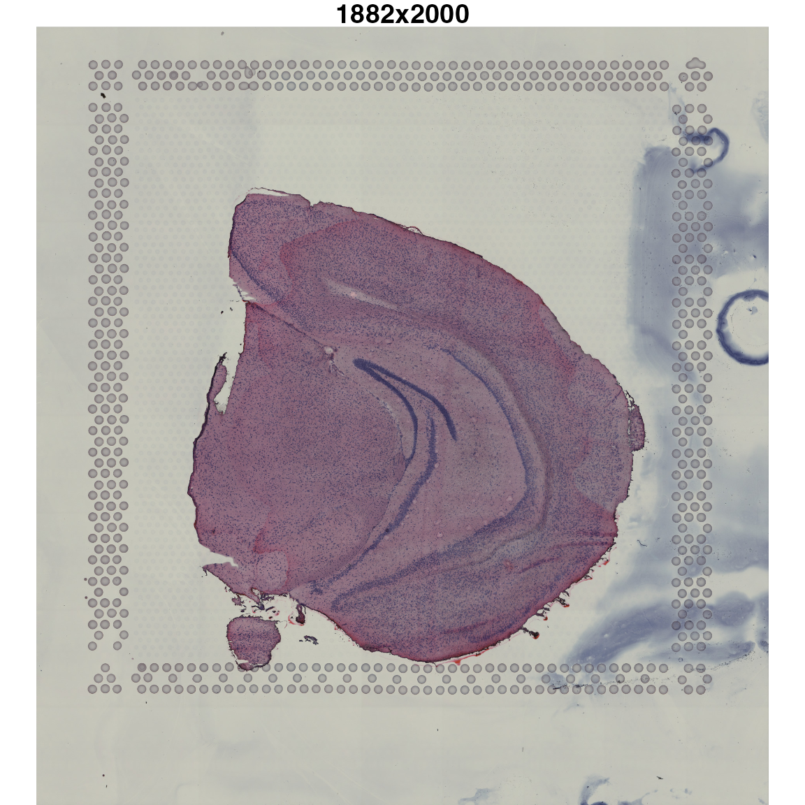

Images and spot coordinates
images_and_coordinates.rmdLoad required libraries:
Image transformation
STUtility2 uses the magick R package to
read and process images. Please have a look at this
vignette if you want to know more about magick.
Let’s load an H&E image and visualize it:
he <- system.file("extdata/mousebrain/spatial", "tissue_hires_image.png", package = "STUtility2")
im <- image_read(he)
# get information about image
info <- image_info(im)
info## # A tibble: 1 × 7
## format width height colorspace matte filesize density
## <chr> <int> <int> <chr> <lgl> <int> <chr>
## 1 PNG 1882 2000 sRGB FALSE 5031054 72x72
# Plot HE image
par(mar = c(0, 0, 1, 0))
im |> as.raster() |> plot()
title(paste0(info$width, "x", info$height))
The H&E image is 2000 pixels high and 1882 pixels wide. If we
want to scale this image, we can use image_scale() from
magick:
# Scale down and plot HE image
im_small <- im |> image_scale("400")
info_small <- image_info(im_small)
info_small## # A tibble: 1 × 7
## format width height colorspace matte filesize density
## <chr> <int> <int> <chr> <lgl> <int> <chr>
## 1 PNG 400 425 sRGB FALSE 0 72x72
par(mar = c(0, 0, 1, 0))
im_small |> as.raster() |> plot()
title(paste0(info_small$width, "x", info_small$height))We can also apply various types of transformations:
# Rotate image
im_rot <- im_small |> image_rotate(degrees = 45)
# Mirror image along x axis
im_xrefl <- im_small |> image_flop()
# Mirror image along y axis
im_yrefl <- im_small |> image_flip()
par(mfrow = c(2, 2), mar = c(0, 0, 2, 0))
im_small |> as.raster() |> plot()
title(paste0("original ", info_small$width, "x", info_small$height))
im_rot |> as.raster() |> plot()
title(paste0("rotated 45 degrees (",
image_info(im_rot)$width, "x", image_info(im_rot)$height, ")"))
im_xrefl |> as.raster() |> plot()
title(paste0("reflected along x axis (",
image_info(im_xrefl)$width, "x", image_info(im_xrefl)$height, ")"))
im_yrefl |> as.raster() |> plot()
title(paste0("reflected along y axis (",
image_info(im_yrefl)$width, "x", image_info(im_yrefl)$height, ")"))When working with multiple SRT datasets, it can be useful to align
the tissue sections to have roughly the same orientation and size. In
other words, we might want to register our H&E images to a reference
image. When doing so, we want to apply rotations, reflections and
translations. The issue with the default magick rotation
function is that it creates a bounding box to hold the entire image,
which makes the image bigger. In the plots above you cans see that the
rotated image is 586x586 pixels in size compared to the 400x425 of the
other images.
The main issue is that if we want to map spots to our H&E images after rotation, the scale has now changed and the spots will appear smaller. Instead, it is more convenient to keep the same input dimensions.
STUtility2 provide two functions to complement the
transformation functions available in the magick R package:
ImageTranslate and ImageTransform.
ImageTranslate can be used to move H&E image. If you
imagine that you have an art board with the same dimensions as your
image, this function can be used to move the H&E image on the art
board. However, only the part of the image that is inside the art board
will be kept.
ImageTransform can be used to rotate and translate
H&E images. Again, the transformations occur inside the art board
and only the part of the image still inside the art board will be
returned.
# Move image 100 pixels to the right and 100 pixels down
im_rot <- im_small |> ImageTranslate(xy_offset = c(100, 100))
# Rotate image 45 degrees
im_transf <- im_small |> ImageTransform(angle = 45, xy_offset = c(0, 0))
# Rotate image 45 degrees and move image 100 pixels to the left and 100 pixels up
im_transf2 <- im_small |> ImageTransform(angle = 45, xy_offset = c(-100, -100))
par(mfrow = c(2, 2), mar = c(0, 0, 2, 0))
im_small |> as.raster() |> plot()
title(paste0("original (", info_small$width, "x", info_small$height, ")"))
im_rot |> as.raster() |> plot()
title(paste0("moved towards bottom right corner (",
image_info(im_rot)$width, "x", image_info(im_rot)$height, ")"))
im_transf |> as.raster() |> plot()
title(paste0("rotated 45 degrees clockwise (",
image_info(im_transf)$width, "x", image_info(im_transf)$height, ")"))
im_transf2 |> as.raster() |> plot()
title(paste0("rotated 45 degrees clockwise and moved (",
image_info(im_transf2)$width, "x", image_info(im_transf2)$height, ")"))
As you can see, regardless of what transformation we apply, the image dimensions remain the same.
Spot transformation
Let’s load some spot coordinates for the H&E image that we have.
# get example coordinate file
cordinatefile <- system.file("extdata/mousebrain/spatial",
"tissue_positions_list.csv",
package = "STUtility2")
# Load coordinates
xy <- LoadSpatialCoordinates(coordinatefiles = cordinatefile, verbose = T)
xy## # A tibble: 2,560 × 7
## barcode selected y x pxl_row_in_fullres pxl_col_…¹ sampl…²
## <chr> <int> <int> <int> <int> <int> <int>
## 1 CATACAAAGCCGAACC-1 1 13 35 4117 6086 1
## 2 CTGAGCAAGTAACAAG-1 1 15 25 4472 5062 1
## 3 GGGTACCCACGGTCCT-1 1 14 26 4294 5164 1
## 4 ACGGAATTTAGCAAAT-1 1 15 27 4472 5266 1
## 5 GGGCGGTCCTATTGTC-1 1 14 28 4294 5369 1
## 6 ATGTTACGAGCAATAC-1 1 15 29 4472 5471 1
## 7 AACCATGGGATCGCTA-1 1 14 30 4294 5574 1
## 8 TCGCATCCCTAAGTGT-1 1 15 31 4473 5676 1
## 9 ACTTAGTACGACAAGA-1 1 14 32 4295 5778 1
## 10 GAGCTCTCGGACCTAA-1 1 15 33 4473 5881 1
## # … with 2,550 more rows, and abbreviated variable names ¹pxl_col_in_fullres,
## # ²sampleIDHere we have access to the Visium grid coordinates and the H&E
image coordinates for the full resolution image used for
spaceranger count. We also have a column with spot barcodes
and a column called selected which holds information about
what sots are located under the tissue.
We can illustrate what this means with a plot:
ggplot(xy, aes(pxl_col_in_fullres, pxl_row_in_fullres, color = factor(selected))) +
geom_point()The spots with a value of 1 correspond to spots under the tissue. But right now, the tissue is upside down in the plot relative to our H&E image. This is because the origin (0, 0) of the plot is located in the bottom left corner, but for images its in the upper right corner.
We can fix this easily by inverting the y axis. However, to do this properly, we need the dimensions of the H&E image…
Unfortunately, we don’t have access to this information right now so we need to load the scalefactors and an H&E image provided in the spaceranger output folder.
scalefactorfile <- system.file("extdata/mousebrain/spatial",
"scalefactors_json.json",
package = "STUtility2")
# read scalefactors
scalefactors <- jsonlite::read_json(scalefactorfile)
scalefactors## $spot_diameter_fullres
## [1] 143.3171
##
## $tissue_hires_scalef
## [1] 0.1039393
##
## $fiducial_diameter_fullres
## [1] 214.9757
##
## $tissue_lowres_scalef
## [1] 0.03118179Now we can see that the scaling factor between the original H&E image and the tissue_lowres image is ~0.03. Let’s load the tissue_lowres and convert our coordinates to fit the image:
lowresimagefile <- system.file("extdata/mousebrain/spatial",
"tissue_lowres_image.png",
package = "STUtility2")
# Load image
im <- image_read(lowresimagefile)
image_info(im)## # A tibble: 1 × 7
## format width height colorspace matte filesize density
## <chr> <int> <int> <chr> <lgl> <int> <chr>
## 1 PNG 565 600 sRGB FALSE 467277 72x72
# Convert coordinates
xy <- xy |>
mutate(across(pxl_col_in_fullres:pxl_row_in_fullres,
~ .x*scalefactors$tissue_lowres_scalef))There are a couple of important things to pay attention to here. The
x, y coordinates are now transformed to fit our H&E image and
therefore we can set the limits of the plot to be the same as the
H&E image dimensions (see limits in
scale_*_continuous()). We also need to set
expand = c(0, 0) to make sure that the margins are removed
from the plot area. We also need to invert the y axis which we can do
now that we have the H&E image height
(image_info(im)$height).
g <- im |>
rasterGrob(width = unit(1, "npc"), height = unit(1, "npc"), interpolate = TRUE)
ggplot(xy, aes(pxl_col_in_fullres,
pxl_row_in_fullres,
color = factor(selected))) +
annotation_custom(g, -Inf, Inf, -Inf, Inf) +
geom_point() +
scale_x_continuous(limits = c(0, image_info(im)$width), expand = c(0, 0)) +
scale_y_reverse(limits = c(image_info(im)$height, 0), expand = c(0, 0))There are also functions available to apply transformations to spots:
CoordTransform and CoordMirror.
CoordTransform is equivalent to
ImageTransform but for spot coordinates, meaning that you
can apply rotations and translations. The main difference is that
CoordTransform rotates around a predefined center. If you
want apply the same rotation to an H&E image and its corresponding
spot coordinates, you want to set the center argument to be
the center of the H&E image.
Let’s demonstrate this with our spot coordinates:
# Select only x, y coordinates
xy_coords <- xy |>
head(n = 1500) |>
select(pxl_col_in_fullres, pxl_row_in_fullres)
# Midpoint
c_xy <- colMeans(xy_coords)
# Apply transformation to apot coordinates
xy_transformed <- CoordTransform(xy_coords, angle = 45, xy_offset = c(0, 0))
# Plot spot coordinates
gg <- rbind(cbind(xy_coords |> setNames(c("x", "y")), type = "original"),
cbind(xy_transformed |> setNames(c("x", "y")), type = "transformed"))
ggplot(gg, aes(x, y, color = type)) +
geom_point() +
geom_point(aes(x = c_xy[1], y = c_xy[2]), color = "red",
size = 5, shape = 4, stroke = 3) +
facet_grid(~type) +
scale_x_continuous(limits = c(0, image_info(im)$width), expand = c(0, 0)) +
scale_y_reverse(limits = c(image_info(im)$height, 0), expand = c(0, 0))The spots are rotated around the center of our spots (red cross). Instead, we want to define a center to rotate the spots around, which will the the center of our H&E image.
# Select only x, y coordinates
xy_coords <- xy |>
head(n = 1500) |>
select(pxl_col_in_fullres, pxl_row_in_fullres)
# Apply transformation to apot coordinates
xy_transformed <- CoordTransform(xy_coords, angle = 45, xy_offset = c(0, 0),
center = c(image_info(im)$width/2,
image_info(im)$height - image_info(im)$height/2))
# Plot spot coordinates
gg <- rbind(cbind(xy_coords |> setNames(c("x", "y")), type = "original"),
cbind(xy_transformed |> setNames(c("x", "y")), type = "transformed"))
ggplot(gg, aes(x, y, color = type)) +
geom_point() +
geom_point(aes(x = image_info(im)$width/2,
y = image_info(im)$height/2),
color = "blue", size = 5, stroke = 3, shape = 4) +
facet_grid(~type) +
scale_x_continuous(limits = c(0, image_info(im)$width), expand = c(0, 0)) +
scale_y_reverse(limits = c(image_info(im)$height, 0), expand = c(0, 0))Now let’s have a look at how we can transform coordinates and images at the same time.
Transform images and spots
Rotation
The CoordAndImageTransform makes the transformation
process a bit simpler. You can provide the H&E image and its
corresponding spot coordinates and apply transformations to both objects
simultaneously. note that the spot coordinates are still defined the
same way as before, i.e. the origin is in the top left corner. This
means that we still need to invert the y axis.
Since some of the spots are now outside the “art board”, they will be missed when drawing the plot. In this example, we lose 46 spots!
# Select only x, y coordinates
xy_coords <- xy |>
select(pxl_col_in_fullres, pxl_row_in_fullres)
# Apply transformations
transf_res <- CoordAndImageTransform(im, xy_coords, angle = 45, xy_offset_image = c(0, 0))
# Plot results
g <- transf_res$im_transf |>
rasterGrob(width = unit(1, "npc"), height = unit(1, "npc"), interpolate = TRUE)
# Add selected to transf_res$xy_transf
transf_res$xy_transf$selected <- xy$selected
# Note that the y axis still needs to be reversed
ggplot(transf_res$xy_transf, aes(tr_x, tr_y,
color = factor(selected))) +
annotation_custom(g, -Inf, Inf, -Inf, Inf) +
geom_point() +
scale_x_continuous(limits = c(0, image_info(im)$width), expand = c(0, 0)) +
scale_y_reverse(limits = c(image_info(im)$height, 0), expand = c(0, 0))Rotation + translation
# Select only x, y coordinates
xy_coords <- xy |>
select(pxl_col_in_fullres, pxl_row_in_fullres)
# Apply transformations
transf.res <- CoordAndImageTransform(im, xy_coords, angle = 45, xy_offset_image = c(100, 100))
# Plot results
g <- transf.res$im_transf |>
rasterGrob(width = unit(1, "npc"), height = unit(1, "npc"), interpolate = TRUE)
# Add selected to transf.res$xy_transf
transf.res$xy_transf$selected <- xy$selected
ggplot(transf.res$xy_transf, aes(tr_x, image_info(im)$height - tr_y,
color = factor(selected))) +
annotation_custom(g, -Inf, Inf, -Inf, Inf) +
geom_point() +
scale_x_continuous(limits = c(0, image_info(im)$width), expand = c(0, 0)) +
scale_y_continuous(limits = c(0, image_info(im)$height), expand = c(0, 0))
# Select only x, y coordinates
xy_coords <- xy |>
select(pxl_col_in_fullres, pxl_row_in_fullres)
# Apply transformations
transf.res <- CoordAndImageTransform(im, xy_coords, angle = 45, mirror_x = TRUE)
# Plot results
g <- transf.res$im_transf |>
rasterGrob(width = unit(1, "npc"), height = unit(1, "npc"), interpolate = TRUE)
# Add selected to transf.res$xy_transf
transf.res$xy_transf$selected <- xy$selected
ggplot(transf.res$xy_transf, aes(tr_x, image_info(im)$height - tr_y,
color = factor(selected))) +
annotation_custom(g, -Inf, Inf, -Inf, Inf) +
geom_point() +
scale_x_continuous(limits = c(0, image_info(im)$width), expand = c(0, 0)) +
scale_y_continuous(limits = c(0, image_info(im)$height), expand = c(0, 0))